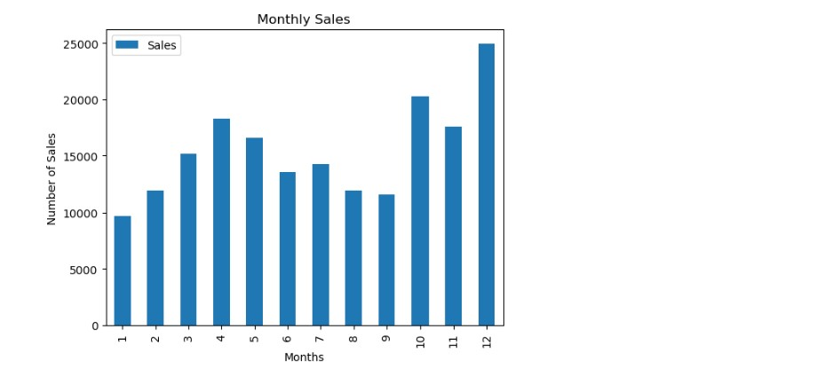
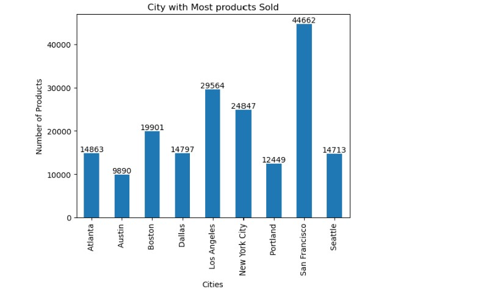
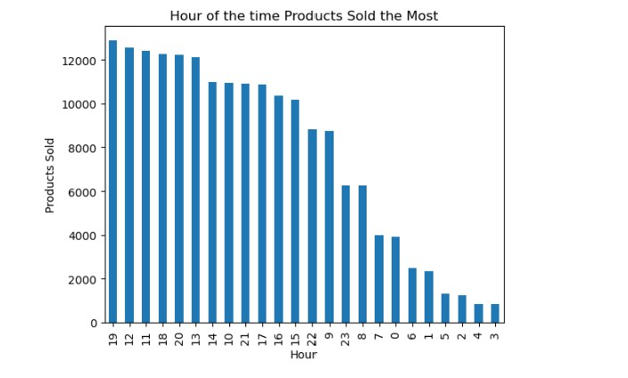
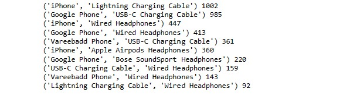
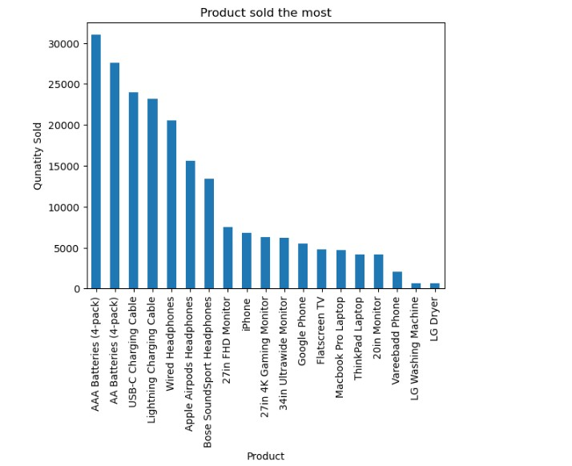
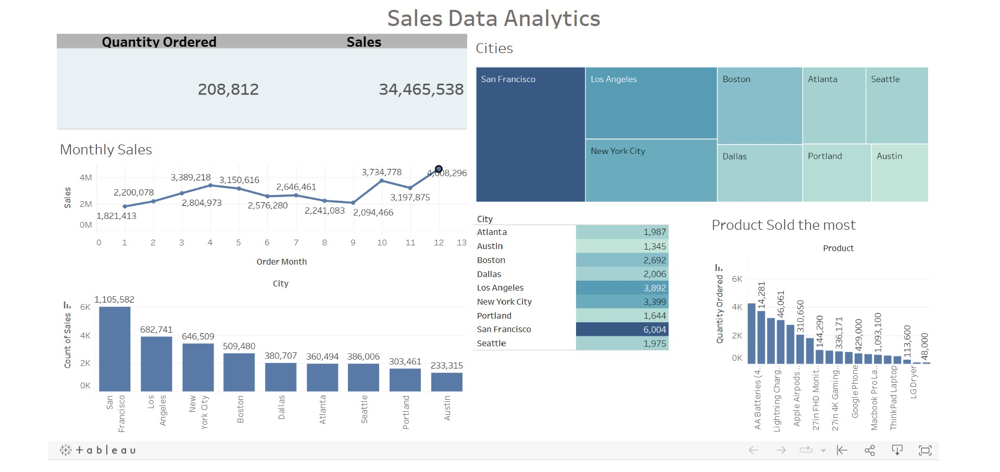

Analysis by answering few questions.
1. What was the best month for sales, and how much revenue was generated during that month?
2. Which city sold the most products?
3. At what time should advertisements be displayed to maximize the likelihood of customers making purchases?
4. Which products are most frequently sold together?
5. Which product had the highest sales volume, and what factors may have contributed to its success?
The Tableau Workbook of the Sales Data Analysis.
